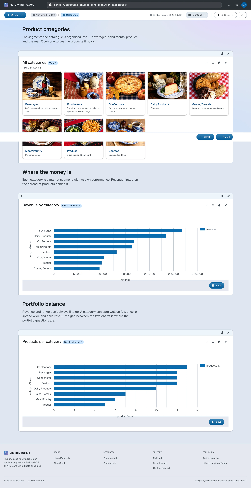

Insight
Turn SPARQL queries into charts and views
With the graph populated, analysis is a query away — and in LinkedDataHub, queries,
charts and
views are resources like everything else. A chart is three resources chained together:
an
sp:Select query holding the SPARQL text, an ldh:ResultSetChart describing how to plot its results, and an ldh:Object block placing it on a document.
A revenue chart
The Categories container carries a revenue-per-category chart. Its query joins order
items to products to categories across their documents. Note that
?orderItem schema:price is already the discounted line total (the demo's
order details mapping computed it per line),
so the query sums it directly.
Run a query in the SPARQL editor; the chart pane below the results lets you pick the chart type, the category and one or more series. Click Save underneath the chart pane: two creation forms store the query and the chart as documents. Place the chart anywhere by adding an Object block whose value is the saved chart's URI.
The three resources, in Turtle:
@prefix ldh: <https://w3id.org/atomgraph/linkeddatahub#> .
@prefix rdf: <http://www.w3.org/1999/02/22-rdf-syntax-ns#> .
@prefix sp: <http://spinrdf.org/sp#> .
@prefix spin: <http://spinrdf.org/spin#> .
@prefix dct: <http://purl.org/dc/terms/> .
<#category-revenue-query> a sp:Select ;
dct:title "Category revenue" ;
sp:text '''PREFIX schema: <https://schema.org/>
SELECT ?categoryName (SUM(?sale) AS ?revenue)
WHERE {
GRAPH ?orderGraph {
?order schema:orderedItem ?orderItem .
?orderItem schema:orderedItem ?product ;
schema:price ?sale .
}
GRAPH ?productGraph {
?product schema:category ?category .
}
GRAPH ?categoryGraph {
?category schema:name ?categoryName .
}
}
GROUP BY ?category ?categoryName
ORDER BY DESC(?revenue)''' .
<#category-revenue> a ldh:ResultSetChart ;
dct:title "Revenue by category" ;
spin:query <#category-revenue-query> ;
ldh:chartType <https://w3id.org/atomgraph/client#BarChart> ;
ldh:categoryVarName "categoryName" ;
ldh:seriesVarName "revenue" .
<#category-revenue-block> a ldh:Object ;
dct:title "Revenue by category" ;
rdf:value <#category-revenue> .
Source: categories.ttl · Live: /categories/
Add <#category-revenue-block> to the container's block sequence (in the finished app it sits at rdf:_4, after a prose block that introduces it) and PUT the document as before:
ldh put "${LDH_BASE}categories/" categories.ttl
Alternatively, ldh add select and ldh add result-set-chart append the query and the chart to the document one resource at a time.
A view
Views render query results as document listings instead of plots — the container's own children listing is one.
A view is placed the same way a chart is: an Object block whose value is the view's URI. The Object block form walks through it.
A grid of all categories:
@prefix ldh: <https://w3id.org/atomgraph/linkeddatahub#> .
@prefix sp: <http://spinrdf.org/sp#> .
@prefix spin: <http://spinrdf.org/spin#> .
@prefix ac: <https://w3id.org/atomgraph/client#> .
@prefix dct: <http://purl.org/dc/terms/> .
<#select-categories-query> a sp:Select ;
dct:title "Select categories" ;
sp:text '''PREFIX schema: <https://schema.org/>
SELECT DISTINCT ?category
WHERE {
GRAPH ?doc {
?category a schema:ProductGroup ;
schema:name ?categoryName .
}
}
ORDER BY ?categoryName''' .
<#select-categories-view> a ldh:View ;
spin:query <#select-categories-query> ;
ac:mode <https://w3id.org/atomgraph/client#GridMode> .
Source: categories.ttl · Live: /categories/
The view and its query go into the same document, so the same PUT installs them; ldh add view is the append alternative.
What you now see
The Categories container is a small dashboard: a revenue bar chart and a grid of the categories themselves — all live views over the graph, recomputed on each request.

How this works
Next: Composition